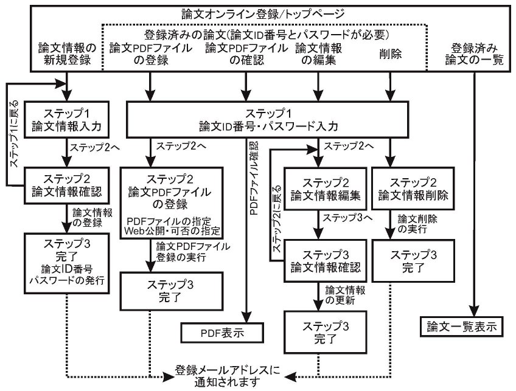
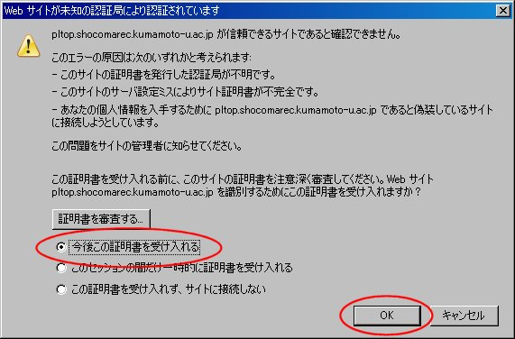

論文のオンライン登録の方法について(重要)
全ての連絡(論文情報登録、論文PDFファイル登録、
プログラム、論文書式の案内等)はWebで行います。また、論文PDFファイルをWeb公開
(public domain)することになりました。
尚、Web公開については発表者の意向を尊重し、可否を選択していた
だきます。
論文の形式や締切情報は、
こちら
をご参照ください。
論文のオンライン登録方法の変更点は次のとおりです。
- 論文情報の登録と、論文PDFファイルのオンライン登録が出来るようになりました。
また、論文情報の更新や削除、論文PDFファイルの更新も可能です。
詳しくはこちらをご参照ください。
- 論文PDFファイルのWeb公開の可否がPDFファイル登録時に選択できるようになりました。
詳しくはこちらをご参照ください。
- オンライン登録(Web登録)がSSL(Secure Socket Layer)化されました。
詳しくはこちらをご参照ください。
- 論文情報の入力項目の注意事項については、こちらをご参照ください。
- 論文PDFファイル登録の注意事項については、こちらをご参照ください。
論文オンライン登録は下記のリンクからお願いいたします。
論文オンライン登録(Web登録)の全体の流れ図
論文オンライン登録は「
論文オンライン登録/トップページ
」
で、次から選択して行います。
- 「論文情報の新規登録」
- 登録済み論文の 「論文PDFファイルの登録」
- 登録済み 「論文PDFファイルの確認」
- 登録済み論文の 「論文情報の編集」
- 登録済み論文の 「削除」
- 「登録済み論文の一覧」
登録済み論文のPDFファイルの登録・確認、論文情報の編集・削除の作業には、「論文情報の新規登録」
の発行(Webページに表示されるともに、電子メールで通知されます)される
「論文ID番号」と「パスワード」が必要です。
論文オンライン登録の流れ図は次のとおりです。

- 「論文情報の新規登録」の完了時に「論文ID番号」と「パスワード」が
表示され、それらの内容が入力されたアドレスに電子メールで通知されます。
のちほど「論文PDFファイルの登録」等の作業で、それらが必要になります。
- 「論文PDFファイルの登録」は何度でも行えます。
登録されている「論文PDFファイル」の更新日とファイルサイズが「登録済み論文の一覧」で
確認できます。
- 「論文PDFファイルの確認」で、「論文PDFファイルの登録」を済ませた後、正しく
登録されたかを確認することが出来ます。その際にも「論文ID番号」と
「パスワード」が必要です。
論文PDFファイルのWeb公開(public domain)について
- 論文PDFファイルをWeb公開(public domain)することになりました。
- 論文PDFファイルの登録時に、Web公開の可否が選択できます。
- 論文PDFファイルのWeb公開は、研究会終了後、本Webページで行われる予定です。
オンライン登録(Web登録)のSSL(Secure Socket Layer)化について
SSL化で登録データの送受信は暗号化(
インターネット上の盗聴などによる登録情報の漏洩の危険性が低下します。
)されますが、
現在のところWebサイトの証明を第3者機関で証明してもらうための
手続きをとっていません。
(オンラインで金銭の授受を行いませんので、その必要はないと考えています)
そのため、オンライン登録サイトに接続すると次のような「警告」がでますが、
「はい」もしくは「OK」をクリックしていただく必要があります。
- Internet Explorerの場合

- Firefoxの場合

論文情報の入力項目の注意事項
「論文題目」、「著者」、「所属」の入力時に、以下の点にご注意ください。
- ISO-2022-JP(JISコード)に変換出来ない 文字は使えません。
例えば、半角カタカナ、ローマ数字、丸囲み数字等が使用できません。
ローマ数字は半角英大文字を使って、IVの様に表記してください。
- 上付下付き文字は、たとえば "T2=1x10-11sec"の場合、 "T_2_=1x10^-11^sec"
の様に表記してください。 _ と ^ は、半角文字を使かってください。
- 上付文字列の中に下付文字列を、またはその逆 (例:T_2=1x10^-11^sec_等)も、出来ません。
- <と>ではさまれたHTMLのタグは、無効化されます。
論文PDFファイル登録の注意事項
- 論文PDFファイルのサイズは、およそ5メガバイト(5 MBytes)未満に制限しています。
- ブラウザによっては、論文PDFファイルの拡張子が"pdf"になっていないと、
登録に失敗するかもしれません。
- 「論文PDFファイルの登録」後、「論文PDFファイルの確認」で、正しく
登録されたかを確認してください。
どうしても「論文PDFファイルの登録」がうまくいかない場合は、
事務局(hikari "＠" pltop.shocomarec.kumamoto-u.ac.jp)まで、電子メールでお送りください。
(注:皆さんがお使いのメールサーバーによっては、電子メールのサイズ制限が
なされている場合や自動的に分割されて配信される場合があります。
ご注意ください。)
Modified: 23 Feb, 2021